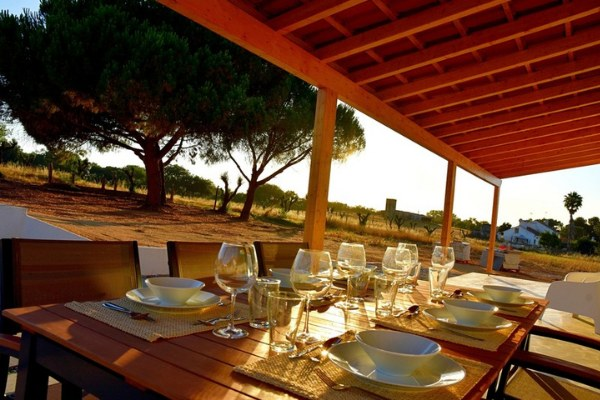
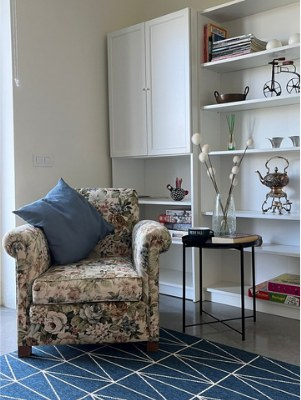
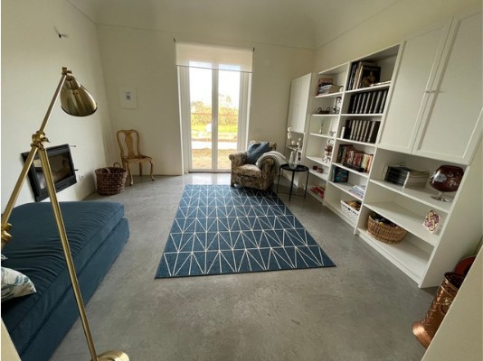
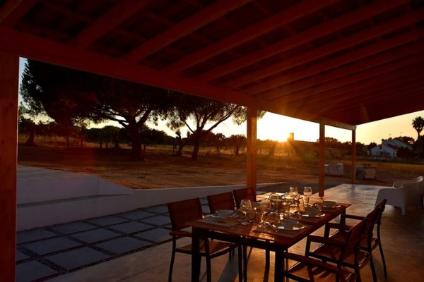
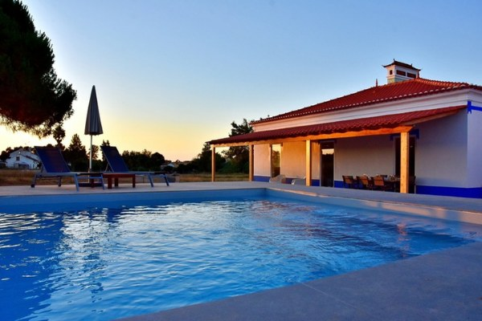
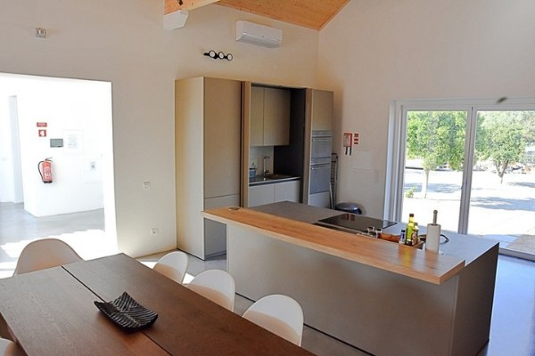
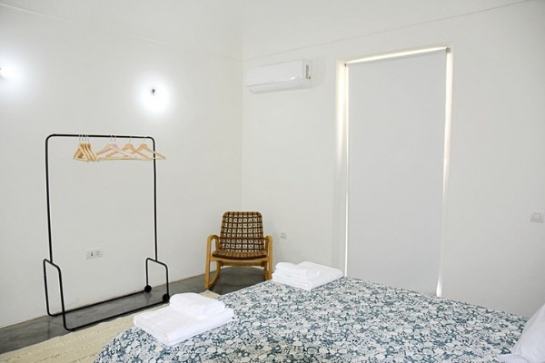

Dormir bem
Quatro quartos, duas casas de banho e cuidado com colchões, almofadas e roupa de cama.
Monte Casa Branca · Montemor-o-Novo
Juntem a família ou os amigos. A casa é inteira, o conforto é de todos e o campo começa à porta.
8 pessoas · 4 quartos · 270 m²
Combinar os nossos dias

Cozinha generosa. Biblioteca com lareira.
E o domingo, quando dá, até ao fim do dia.*
*Saída tardia sem entrada no mesmo dia, combinada com o anfitrião.

Por dentro, uma boa casa
Uma casa inteira de 270 m², com quatro quartos para oito pessoas. Ar condicionado em todas as divisões, biblioteca com lareira e uma cozinha equipada para uma casa cheia.
Em Reguengo, Montemor-o-Novo. A cerca de uma hora de Lisboa.
Entrem e vejam a casa ↗Quatro quartos, duas casas de banho e cuidado com colchões, almofadas e roupa de cama.
Utensílios generosos, mesa para reunir e copos de vinho para acompanhar a conversa.
Recebem as indicações do anfitrião e entram sem combinar uma entrega presencial da chave.
O domingo também conta
Ao fim de semana, queremos que aproveitem a casa até ao fim do domingo. Mais uma refeição à mesa. Mais uma conversa no alpendre.
*Saída tardia quando não há entrada no mesmo dia, sempre combinada com o anfitrião. A hora é confirmada para cada estadia.
Pensem no vosso próximo fim de semana ↗
É aqui que se fica
Da cozinha ao alpendre, da biblioteca à piscina. Espaços diferentes para aproveitar o mesmo tempo.



Juntem as pessoas. Escolham os dias.
O valor é da casa inteira. Escolham as datas e falem diretamente com o Diogo para confirmar o preço, a disponibilidade e os pormenores.
Estudo de apresentação: valores indicativos com as tabelas documentadas de 2026 e 2027. Não consulta disponibilidade nem envia pré-reservas.
Montemor-o-Novo · próximos dias
Exemplo visual · valores fictícios
Dados: Open-Meteo
Fonte prevista; estes valores são apenas de apresentação.
Total da casa
2 noites · casa inteira
2 × 250 € + 170 € de limpeza
Exemplo indicativo. A disponibilidade e o total são confirmados pelo anfitrião.
Média dos últimos 10 anos
Exemplo visual · valores fictícios; não é uma previsão
Pôr do sol no dia de saída: 17h20*
*Hora fictícia para mostrar o desenho. A saída tardia depende de não haver entrada no mesmo dia e de combinação com o anfitrião.
Dados: Open-Meteo
O formulário de pré-reserva será apresentado na página de reserva. Neste estudo, podem preparar uma mensagem por WhatsApp ou email; nada foi enviado.
Reguengo · Montemor-o-Novo
A cerca de uma hora de Lisboa e a 25 minutos de Évora. O centro de Montemor-o-Novo fica a três quilómetros. Aqui, o tempo é para aproveitar a casa e a vida do campo.
Ver localização ↗Os animais de companhia são bem-vindos. Falem com o Diogo antes da estadia para combinar os pormenores.
A entrada é a partir das 16h. Recebem as indicações e o acesso à chave por WhatsApp, sem uma entrega presencial combinada.
Quando não há entrada no mesmo dia, é possível combinar uma saída tardia com o anfitrião. A hora é confirmada para cada estadia.